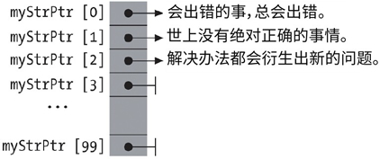

首页 > 编程笔记
C语言数组指针和指针数组
在许多 C 程序中，指针常被用于引用数组，或者作为数组的元素。指向数组的指针常被简称为数组指针（array pointer），而具有指针类型元素的数组则被称为指针数组（pointer array）。
要声明指向数组类型的指针，必须使用括号，如下所示：
如果没有括号，则声明 int*arrPtr[l0]；表示 arrPtr 是一个具有 10 个 int 类型指针的数组。
在该例中，指向有 10 个 int 元素的数组的指针会被初始化为 NULL。然而，如果把合适数组的地址分配给它，那么表达式 *arrPtr 会获得数组，并且（*arrPtr）[i] 会获得索引值为 i 的数组元素。根据下标运算符的规则，表达式（*arrPtr）[i] 等同于 *（（*arrPtr）+i）。因此，**arrPtr 获得数组的第一个元素，其索引值为 0。
为了展示数组指针 arrPtr 的几个运算，下例使用它来定位一个二维数组的某些元素，也就是矩阵内的某些行：
在初始化赋值后，arrPtr 指向矩阵的第一个行，正如矩阵名称 matrix 一样。在这种情况下，使用 arrPtr 获取元素的方式与使用 matrix 完全一样。例如，赋值运算（*arrPtr）[0]=5 等效于 arrPtr[0][0]=5 和 matrix[0][0]=5。
然而，与数组名称 matrix 不同的是，指针名称 arrPtr 并不代表一个常量地址，如运算 ++arrPtr 所示，它进行了自增运算。这个自增运算会造成存储在数组指针的地址增加一个数组空间大小，在本例中，即增加矩阵一行的空间大小，也就是 10 乘以 int 元素在内存中所占字节数量。
如果想把一个多维数组传入函数，则必须声明对应的函数参数为数组指针。最后要注意的是，如果 a 是一个具有 10 个 int 类型元素的数组，那么无法使用下面的方式对前面例子中的指针 arrPtr 赋值：
错误的原因是，数组名字，例如上文的 a，会被隐式地转换为指针，指向数组第一个元素，而不是指向整个数组。指向 int 的指针没有被隐式地转换为指向 int 数组的指针。本例中的赋值操作需要显式的类型转换，在类型转换运算符中明确指定目标类型是
在前文 arrPtr 的声明语句（int（*arrPtr）[10]=NULL；）中，删除其中标识符 arrPtr，就可得到 int（*）[10]，即对应的数组指针类型。然而，为了提高可读性和灵活性，可以利用 typedef 为所用的类型定义一个简单的名字：
例如，如果需要处理字符串，可以将它们存储在一个二维数组中，该数组行空间大小必须足以存储下可能出现的最长字符串：
然而，这个方式造成内存浪费，25600 字节中只有一小部分被实际使用到。一方面，短字符串会让大部分的行是空的；另一个方面，有些行根本没有用到，但却得为它预留内存。
一个简单的解决方案是，使用指针数组，让指针指向对象（在此处的对象就是字符串），然后只给实际存在的对象分配内存（未用到的数组元素则是空指针）。
图 1 展示了对象在内存中的存储情况：
尚未使用的指针可以在运行时指向另一个字符串。所需的存储空间可以利用这种常见方法来动态地保留。当不再需要该内存时，可以释放。
例 1 中的程序是一个简单版本的过滤器工具 sort。它从标准输入流中读取文字，根据字母顺序对行排序，然后将结果在标准输出中显示出来。这个程序没有移动任何字符串，它实际排序的是一个指针数组。
【例1】对文字各行进行排序的简单程序
在例 1 中，常量 NLINES_MAX 限制了一行文字中字符数量的最大值。然而，我们可以通过动态地创建指向文本行指针的数组，达到消除该限制的目的。
数组指针
为了便于举例，下面的描述均以一个 int 数组为例。同样的原理可以应用于其他类型数组，包括多维数组。要声明指向数组类型的指针，必须使用括号，如下所示：
int (* arrPtr)[10] = NULL; // 一个指针，它指向一个有10个int元素的数组
如果没有括号，则声明 int*arrPtr[l0]；表示 arrPtr 是一个具有 10 个 int 类型指针的数组。
在该例中，指向有 10 个 int 元素的数组的指针会被初始化为 NULL。然而，如果把合适数组的地址分配给它，那么表达式 *arrPtr 会获得数组，并且（*arrPtr）[i] 会获得索引值为 i 的数组元素。根据下标运算符的规则，表达式（*arrPtr）[i] 等同于 *（（*arrPtr）+i）。因此，**arrPtr 获得数组的第一个元素，其索引值为 0。
为了展示数组指针 arrPtr 的几个运算，下例使用它来定位一个二维数组的某些元素，也就是矩阵内的某些行：
int matrix[3][10]; // 3行，10列的数组
// 数组名称是一个指向第一个元素的指针，也就是第一行的指针
arrPtr = matrix; // 使得arrPtr指向矩阵的第一行
(*arrPtr)[0] = 5; // 将5赋值给第一行的第一个元素
arrPtr[2][9] = 6; // 将6赋值给最后一行的最后一个元素
++arrPtr; // 将指针移动到下一行
(*arrPtr)[0] = 7; // 将7赋值给第二行的第一个元素
在初始化赋值后，arrPtr 指向矩阵的第一个行，正如矩阵名称 matrix 一样。在这种情况下，使用 arrPtr 获取元素的方式与使用 matrix 完全一样。例如，赋值运算（*arrPtr）[0]=5 等效于 arrPtr[0][0]=5 和 matrix[0][0]=5。
然而，与数组名称 matrix 不同的是，指针名称 arrPtr 并不代表一个常量地址，如运算 ++arrPtr 所示，它进行了自增运算。这个自增运算会造成存储在数组指针的地址增加一个数组空间大小，在本例中，即增加矩阵一行的空间大小，也就是 10 乘以 int 元素在内存中所占字节数量。
如果想把一个多维数组传入函数，则必须声明对应的函数参数为数组指针。最后要注意的是，如果 a 是一个具有 10 个 int 类型元素的数组，那么无法使用下面的方式对前面例子中的指针 arrPtr 赋值：
arrPtr = a; // 错误：指针类型不匹配
错误的原因是，数组名字，例如上文的 a，会被隐式地转换为指针，指向数组第一个元素，而不是指向整个数组。指向 int 的指针没有被隐式地转换为指向 int 数组的指针。本例中的赋值操作需要显式的类型转换，在类型转换运算符中明确指定目标类型是
int (*) [10]： arrPtr = (int (*)[10])a; // 合法
在前文 arrPtr 的声明语句（int（*arrPtr）[10]=NULL；）中，删除其中标识符 arrPtr，就可得到 int（*）[10]，即对应的数组指针类型。然而，为了提高可读性和灵活性，可以利用 typedef 为所用的类型定义一个简单的名字：
typedef int ARRAY_t[10]; // 定义一个“具有10个元素数组”类型名称
ARRAY_t a, // 具有该类型的数组
*arrPtr; // 一个指向该数组类型的指针
arrPtr = (ARRAY_t *)a; // 使得arrPtr指向a
指针数组
指针数组（也就是元素为指针类型的数组）常常作为二维数组的一种便捷替代方式。一般情况下，这种数组中的指针会指向动态分配的内存区域。例如，如果需要处理字符串，可以将它们存储在一个二维数组中，该数组行空间大小必须足以存储下可能出现的最长字符串：
#define ARRAY_LEN 100
#define STRLEN_MAX 256
char myStrings[ARRAY_LEN][STRLEN_MAX] =
{ // 墨菲定律的几条推论：
“会出错的事，总会出错。”
“世上没有绝对正确的事情。”
“每个解决办法都会衍生出新的问题。”
};
然而，这个方式造成内存浪费，25600 字节中只有一小部分被实际使用到。一方面，短字符串会让大部分的行是空的；另一个方面，有些行根本没有用到，但却得为它预留内存。
一个简单的解决方案是，使用指针数组，让指针指向对象（在此处的对象就是字符串），然后只给实际存在的对象分配内存（未用到的数组元素则是空指针）。
#define ARRAY_LEN 100
char *myStrPtr[ARRAY_LEN] = // char指针的数组
{ // 墨菲定律的几条推论：
“会出错的事，总会出错。”
“世上没有绝对正确的事情。”
“每个解决办法都会衍生出新的问题。”
};
图 1 展示了对象在内存中的存储情况：

图 1
图 1
尚未使用的指针可以在运行时指向另一个字符串。所需的存储空间可以利用这种常见方法来动态地保留。当不再需要该内存时，可以释放。
例 1 中的程序是一个简单版本的过滤器工具 sort。它从标准输入流中读取文字，根据字母顺序对行排序，然后将结果在标准输出中显示出来。这个程序没有移动任何字符串，它实际排序的是一个指针数组。
【例1】对文字各行进行排序的简单程序
#include <stdio.h>
#include <stdlib.h>
#include <string.h>
char *getLine(void); // 读取文本中的一行
int str_compare(const void *, const void *);
#define NLINES_MAX 1000 // 定义文本行数的最大值
char *linePtr[NLINES_MAX]; // char指针的数组
int main()
{
// 读入行
int n = 0; // 读入行的数量
for ( ; n < NLINES_MAX && (linePtr[n] = getLine()) != NULL; ++n )
;
if ( !feof(stdin) ) // 处理错误
{
if ( n == NLINES_MAX )
fputs( "sorttext: too many lines.\n", stderr );
else
fputs( "sorttext: error reading from stdin.\n", stderr );
}
else // 排序和输出
{
qsort( linePtr, n, sizeof(char*), str_compare ); // 排序
for ( char **p = linePtr; p < linePtr+n; ++p ) // 输出
puts(*p);
}
return 0;
}
// 从stdin中的文本读取一行；忽略尾部的换行符
// 返回值： 一个指向所读字符串的指针，或者为NULL，当读到文字结尾时或发生错误时
#define LEN_MAX 512 // 定义一行字符数的最大值
char *getLine()
{
char buffer[LEN_MAX], *linePtr = NULL;
if ( fgets( buffer, LEN_MAX, stdin ) != NULL )
{
size_t len = strlen( buffer );
if ( buffer[len-1] == '\n' ) // 去掉尾部的换行符
buffer[len-1] = '\0';
else
++len;
if ( (linePtr = malloc( len )) != NULL ) // 为行获得内存空间
strcpy( linePtr, buffer ); // 将行复制到已分配区域
}
return linePtr;
}
// 比较函数，供qsort()使用
// 参数：两个指针，指向数组内待排序的两个元素，这里，两个指针都是char **类型
int str_compare( const void *p1, const void *p2 )
{
return strcmp( *(char **)p1, *(char **)p2 );
}
在例 1 中，常量 NLINES_MAX 限制了一行文字中字符数量的最大值。然而，我们可以通过动态地创建指向文本行指针的数组，达到消除该限制的目的。
关注公众号「站长严长生」，在手机上阅读所有教程，随时随地都能学习。内含一款搜索神器，免费下载全网书籍和视频。

微信扫码关注公众号